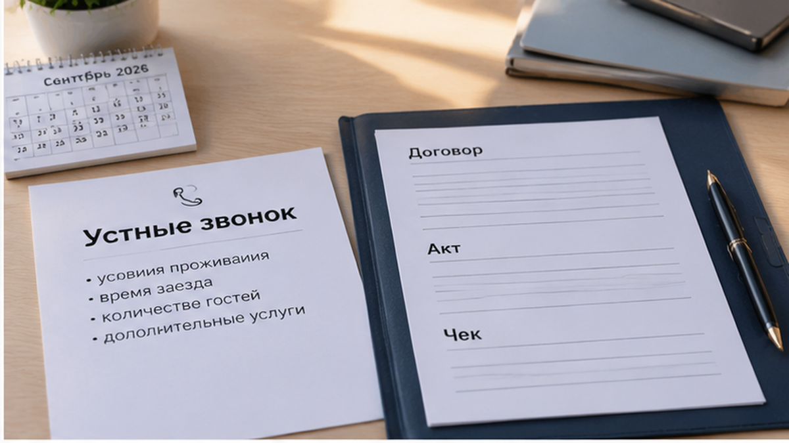
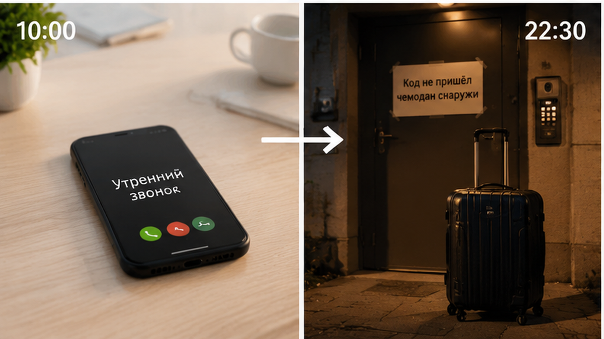
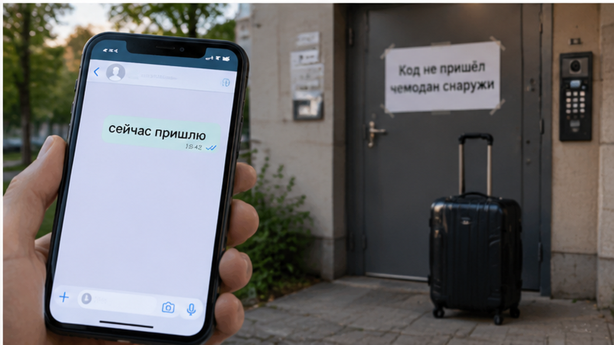

Командировка в Тюмень на две ночи: менеджер нашёл квартиру, согласовал сумму с бухгалтерией и перевёл около 8 400 ₽. Утром созвонились. Голос спокойный, уверенный: «Всё ок, вечером пришлю код». Человек выдохнул и уехал работать — дорога, встречи, две папки документов, ужин на бегу. К ночи он добрался до дома, но кода не получил. Написал в чат. Ответ пришёл быстро: «Сейчас пришлю». Потом наступила тишина. Подъезд закрыт, домофон чужой, чемодан стоит на асфальте, соседи проходят мимо.
Параллельно тикала вторая история. К понедельнику бухгалтерия ждала договор, акт и чек. У гостя были только переписка в мессенджере и скрин перевода. Этим авансовый отчёт не закрывается. За одну поездку сломались два узла: ночью не было входа, а после выезда не было подтверждённых документов. До оплаты ничего не закрепили письменно — только сказали по телефону, что «всё ок».
Я хост посуточной в Тюмени. Это «Добрый дом». Гости пишут нам в Telegram и MAX, и большая часть вопросов до брони как раз об этом: когда придёт код и какие документы будут после выезда.

Разговор голосом кажется надёжным: человек отвечает сразу, говорит спокойно, вроде бы всё понял. Но через несколько часов от него не остаётся рабочего инструмента. Нет времени отправки кода, номера квартиры, запасного контакта и понятного плана, если домофон или замок не откроются.
Это не обязательно означает, что арендодатель изначально хотел обмануть. Возможно, у него сместились дела, сел телефон или не успела уборщица. Причина для гостя уже не меняет ситуации. Он не может войти и не может быстро показать, что именно ему обещали.
С документами та же проблема. Фраза «закрывающие сделаем, не переживайте» звучит как забота, но бухгалтерии нужен комплект: договор, акт и платёжный документ. Если арендодатель — самозанятый, чек формируется в «Мой налог», и заранее стоит согласовать, на кого оформляется договор и кто указан заказчиком: сотрудник или компания. Переписка и скрин перевода этот комплект не заменяют.

Гость сделал правильную вещь: позвонил перед оплатой. Ошибка была в другом — разговор не перевели в текст. После звонка достаточно было написать: «Подтвердите, пожалуйста, какие документы будут и когда, а также во сколько придёт код и куда его отправите». Ответ занял бы минуту, но показал бы, есть ли вообще готовый план.
Вопрос-отмычка здесь простой: «Какие закрывающие пришлёте и когда — до перевода?» Следом нужно спросить: «Во сколько придёт код и что делать, если он не сработает?» Если в ответе есть конкретное время, способ отправки и резервная связь, риск становится управляемым. Если звучит «всё решим на месте», риск просто перенесли на ночь.
Бесконтактное заселение требует ещё одной проверки. Код на домофон и код на замок могут быть разными; иногда ключ лежит в кейс-боксе, иногда код меняется под каждого гостя и приходит только в день заезда. Любой вариант нормален, если инструкция написана заранее и есть человек, который ответит ночью. Мы отдельно разбирали, почему удалённый вход ломается без такой подготовки, в материале про бесконтактное заселение посуточно в Тюмени.

Когда человек перевёл предоплату, а хозяин сразу пропал, ситуация хотя бы быстро становится понятной: связи нет, нужно искать другое жильё. Такой случай мы описывали в кейсе про предоплату и тишину в чате.
Здесь ловушка мягче. Связь сохраняется. На каждое сообщение приходит надежда: «сейчас пришлю», «уже отправляю», «пять минут». Гость не уезжает, не ищет запасной вариант и не звонит по другим объявлениям, потому что решение вроде бы рядом. Он теряет не только деньги. Он теряет время, силы и возможность спокойно выбрать другое место. Ночью в незнакомом городе это может оказаться дороже 8 400 ₽.
В командировке есть и другие детали, которые нельзя оставлять на потом. После выезда поезд может быть только через несколько часов, а чемодан уже негде оставить. Как с этим справляться, мы показывали в разборе про вещи между выездом и поездом. Если гость приезжает на машине, заранее нужен и понятный ответ по въезду во двор: про парковку у шлагбаума есть отдельный материал.
Вы бронировали жильё в командировку — код приходил вовремя или вы тоже стояли у подъезда под обещание «сейчас пришлю»? Напишите нам в Telegram или MAX. В комментариях срочный вопрос легко теряется, а в личном сообщении можно сразу разобрать последовательность событий.
Мы не берём деньги под устное обещание. Если гость пишет, что едет в командировку и ему нужны закрывающие, сначала отправляем текстом: кто арендодатель, какие документы будут, в какой форме и в какой срок после выезда. Затем присылаем инструкцию входа: адрес, подъезд, код домофона, способ получить ключ и номер для связи ночью.
Только после этого обсуждаем оплату. Если человек просит сначала перевести деньги, а код и бумаги обещает прислать вечером, нет. Так не заселяем. Не из недоверия к гостю. Просто иначе вся договорённость остаётся в голове одного человека, а у второго нет ни ключа, ни понятного подтверждения.
Сначала проверка. Потом перевод. Сначала документы и инструкция. Потом ключ. Это не бюрократия ради бюрократии, а минимальная защита от ситуации, в которой ночь уже наступила, а каждый участник помнит разговор по-своему.
Девять вопросов занимают несколько минут в чате. Внятный ответ по пунктам показывает, что заселение подготовлено. Попытка снова увести всё в телефонный разговор оставляет тот же риск: вечером кто-то скажет «сейчас», а у гостя не будет ни кода, ни запасного решения.
Устное «всё ок» — это не ключ, а только его картинка. Ею нельзя открыть замок и нельзя закрыть авансовый отчёт. Настоящий ключ — короткий письменный план до оплаты: когда придёт код, что делать при сбое, какие документы будут и в какой срок. Сначала проверка, потом деньги; сначала инструкция, потом ключ.
Если ищете квартиру посуточно в Тюмени для командировки и вам нужны закрывающие документы, напишите заранее. Мы пришлём условия и инструкцию текстом, чтобы их можно было проверить до перевода.
Telegram: https://t.me/Dobriy_dom_72
MAX: https://max.ru/id660300569233_biz
Забронировать: https://добрыйдом-72.рф/booking/
Сайт: https://добрыйдом-72.рф/
Телефон: +7 (993) 574-83-22
Менеджер: https://t.me/Dobriy_dom_Tyumen